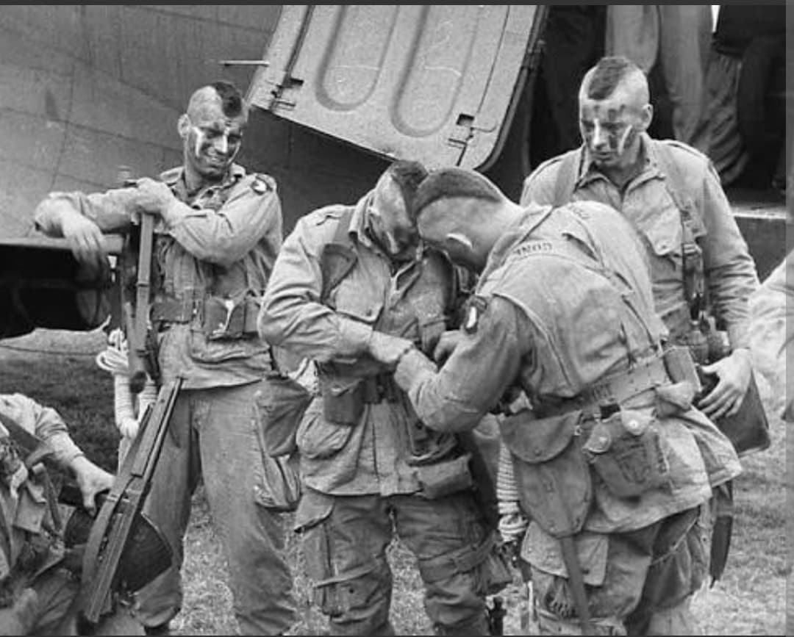
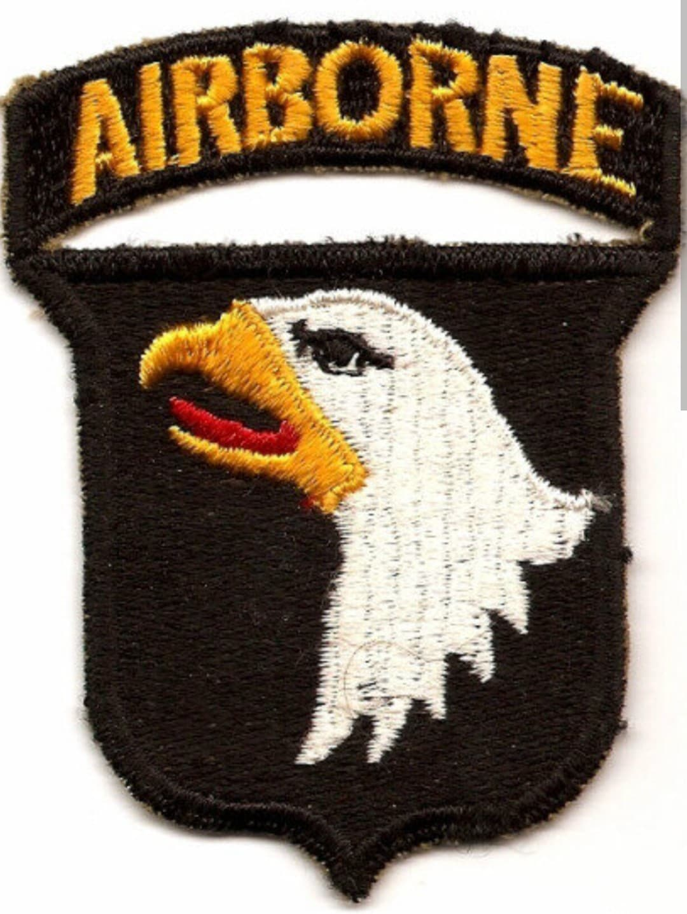
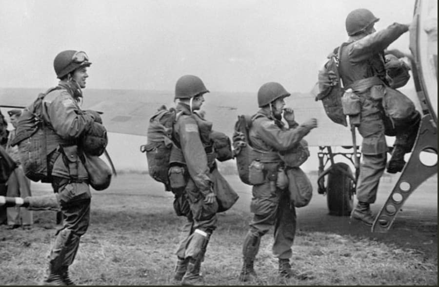
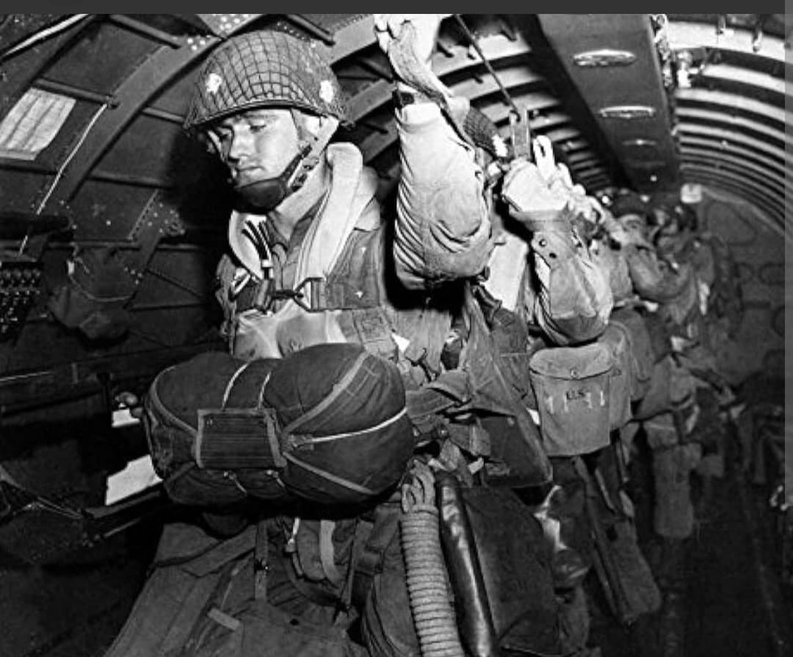
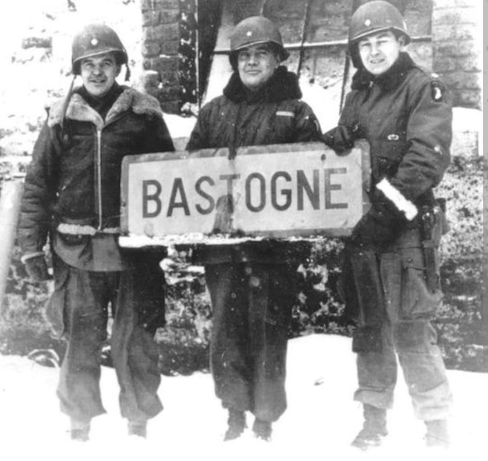

Les aigles hurlants de la Normandie, héros d'Eindhoven et défenseurs légendaires de Bastogne

La 101st Airborne Division de l'armée américaine, surnommée les “Screaming Eagles” (Les Aigles Hurlants), est l'une des unités aéroportées les plus légendaires de l'histoire militaire.
Parachutée dans la nuit du 5 au 6 juin 1944 derrière les lignes ennemies en Normandie, elle s'est illustrée dans la capture de Carentan, la prise des ponts aux Pays-Bas lors de l'Opération Market Garden, et la résistance héroïque au siège de Bastogne pendant la bataille des Ardennes.
Activée en août 1942 au Camp Claiborne sous les ordres du général **William C. Lee**, la division est pensée dès sa création pour intervenir au cœur du dispositif ennemi. Le général Lee déclarera alors : « La 101e n'a pas d'histoire, mais elle a un rendez-vous avec le destin. »
Son insigne d'épaule emblématique représente une tête d'aigle de pygargue à tête blanche sur fond noir, surmontée de la glissière AIRBORNE. Son commandement opérationnel en Europe sera assuré par le général **Maxwell D. Taylor**.

Largués au-dessus de la presqu'île du Cotentin à bord de centaines de C-47, près de 6 700 parachutistes de la 101st ont pour mission de sécuriser les sorties de plage d'Utah Beach et de verrouiller les accès vers Carentan.
Malgré une dispersion extrême due à la D.C.A. allemande et à la météo, les parachutistes se regroupent en petites unités et parviennent à remplir leurs objectifs. Du 10 au 12 juin, la division mène de sanglants combats pour capturer la ville stratégique de **Carentan**, assurant la jonction entre Utah Beach et Omaha Beach.


Le 17 septembre 1944, la 101st Airborne est parachutée aux Pays-Bas dans le cadre de l'Opération Market Garden. Sa mission est de capturer les ponts stratégiques le long de la "Hell's Highway" (l'Autoroute de l'Enfer) entre Eindhoven et Veghel.
Bien que la division réussisse à libérer Eindhoven et à tenir la route face aux incessantes contre-attaques de la Wehrmacht, l'opération globale échoue à prendre le pont d'Arnhem.
Dépêchée d'urgence dans les Ardennes en décembre 1944, la division est encerclée dans le nœud routier stratégique de **Bastogne** par plusieurs divisions allemandes. Sous le commandement temporaire du général **Anthony McAuliffe**, les hommes résistent dans le froid glacial, sans équipements d'hiver et en manque de munitions.
Sommé de se rendre par l'état-major allemand le 22 décembre, McAuliffe répliquera par son mot célèbre : “NUTS!” (Des clous !). La division tiendra la position jusqu'à la percée des blindés du général Patton le 26 décembre 1944.

Au cours de la Seconde Guerre mondiale, la 101st Airborne Division enregistre plus de **9 300 pertes** (dont environ 2 000 tués au combat). Deux de ses régiments (le 506th PIR avec la célèbre Easy Company et le 502nd PIR) entreront dans la culture populaire mondiale.
Aujourd'hui encore, la 101st Airborne demeure l'une des unités d'élite majeures de l'US Army, spécialisée dans les opérations d'assaut héliporté.
Page du Musée HOP WW2 – Section États-Unis & Unités d'Élite